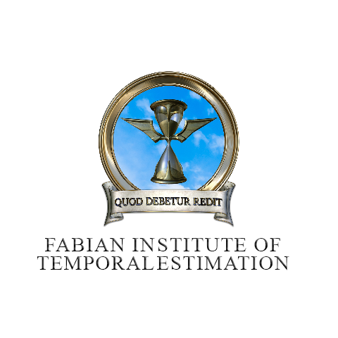
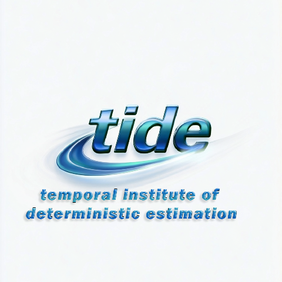
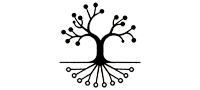
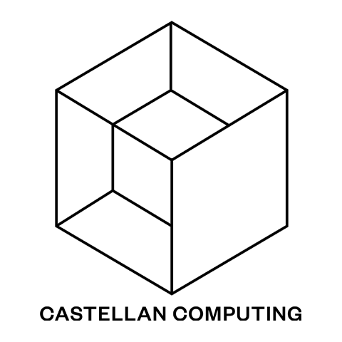

The model behind three decades of private forecasting.
Something in you has already been decided. Not by chance, and not by choice, but by a pattern most people never learn to see. Others call it luck when it goes their way and misfortune when it doesn't. Enter a date and find out what has been in motion your entire life.
Begin a readingFounder of F.A.T.E. and T.I.D.E., Castellan has spent four decades tracing the recurring architecture beneath market behavior and private fortune. For security reasons, our founder has not been photographed since 1985.

Fabian Institute for Applied Temporal Estimation. Publisher of the model's private bulletin.

Temporal Institute for Deterministic Estimation. Maintains and tests the model.

A closed circle of subscribers, meeting once a year since 1991.

Our founder's new venture into destiny analysis, powered by cutting edge AI technologies.
Four classes of access exist. Two are available to the public.
FREE
Find out what 3 dates can change your life.
$980 annually
The full reading. Direction, position, and two centuries of comparison.
$4,200 annually
Full readings for up to four subjects, plus the private bulletin.
By nomination only
Not purchased. For fleet captains who no longer leave destiny to chance, and prefer the company of others who feel the same.